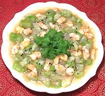

|
Luffa with ShrimpIndia - Madras - Peducherri Prkankai | ||||
| Serves: Effort: Sched: DoAhead: |
4 side ** 45 min Yes |
A delicate and delightful side dish for both Indian and Western menus. Luffa, mustard seed and shrimp are amazingly complimentary flavors over a foundation of onions. | |||
|
2 8 10 1 2 1/3 |
# oz oz T t t |
Angled Luffa (1) Shrimp (2) Onion Oil Mustard seed Salt |
Prep - (25 min)
|